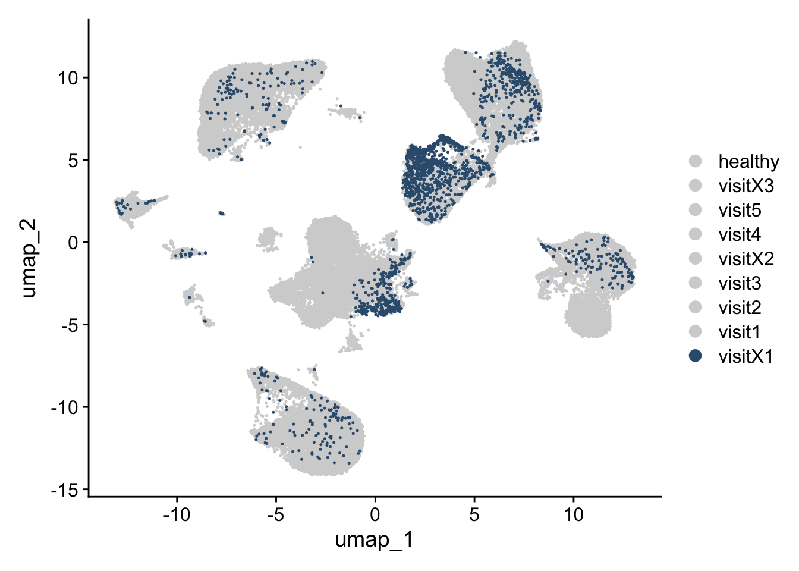

CarTransLateRej
A.DeMartin
2025-02-20
Last updated: 2025-02-21
Checks: 5 2
Knit directory: CarTransLateRej/
This reproducible R Markdown analysis was created with workflowr (version 1.7.1). The Checks tab describes the reproducibility checks that were applied when the results were created. The Past versions tab lists the development history.
The R Markdown is untracked by Git. To know which version of the R
Markdown file created these results, you’ll want to first commit it to
the Git repo. If you’re still working on the analysis, you can ignore
this warning. When you’re finished, you can run
wflow_publish to commit the R Markdown file and build the
HTML.
Great job! The global environment was empty. Objects defined in the global environment can affect the analysis in your R Markdown file in unknown ways. For reproduciblity it’s best to always run the code in an empty environment.
The command set.seed(20250218) was run prior to running
the code in the R Markdown file. Setting a seed ensures that any results
that rely on randomness, e.g. subsampling or permutations, are
reproducible.
Great job! Recording the operating system, R version, and package versions is critical for reproducibility.
Nice! There were no cached chunks for this analysis, so you can be confident that you successfully produced the results during this run.
Using absolute paths to the files within your workflowr project makes it difficult for you and others to run your code on a different machine. Change the absolute path(s) below to the suggested relative path(s) to make your code more reproducible.
| absolute | relative |
|---|---|
| /Users/immbio/Desktop/Project/Angelina/CarTransLateRej/data/seurat_files/ | data/seurat_files |
| /Users/immbio/Desktop/Project/Angelina/CarTransLateRej/data/CarTransLateRej_allmerged_seurat.rds | data/CarTransLateRej_allmerged_seurat.rds |
Great! You are using Git for version control. Tracking code development and connecting the code version to the results is critical for reproducibility.
The results in this page were generated with repository version d36074e. See the Past versions tab to see a history of the changes made to the R Markdown and HTML files.
Note that you need to be careful to ensure that all relevant files for
the analysis have been committed to Git prior to generating the results
(you can use wflow_publish or
wflow_git_commit). workflowr only checks the R Markdown
file, but you know if there are other scripts or data files that it
depends on. Below is the status of the Git repository when the results
were generated:
Ignored files:
Ignored: .DS_Store
Ignored: .Rhistory
Ignored: .Rproj.user/
Ignored: analysis/.Rhistory
Ignored: analysis/figure/
Ignored: data/seurat_files/
Untracked files:
Untracked: analysis/Merge-QC-UMAPS.Rmd
Untracked: analysis/RelativeAbundances.Rmd
Unstaged changes:
Deleted: data/README.md
Note that any generated files, e.g. HTML, png, CSS, etc., are not included in this status report because it is ok for generated content to have uncommitted changes.
There are no past versions. Publish this analysis with
wflow_publish() to start tracking its development.
load packages
##############################start pre-processing##############################
load files and merge
### load and merge all
basedir <- "/Users/immbio/Desktop/Project/Angelina/CarTransLateRej/data/seurat_files/"
fileNamList <- list.files(path = basedir)
for(i in 1:length(fileNamList)){
seuratS <- readRDS(paste0(basedir, fileNamList[i]))
if(exists("seuratM")){
seuratM <- merge(x = seuratM, y = seuratS)
}else{
seuratM <- seuratS
}
}
remove(seuratS)
table(seuratM$dataset)
table(seuratM$orig.ident)
#rerun seurat
seuratM <- NormalizeData (object = seuratM)
seuratM <- FindVariableFeatures(object = seuratM)
seuratM <- ScaleData(object = seuratM, verbose = TRUE)
seuratM <- RunPCA(object=seuratM, npcs = 30, verbose = FALSE)
#seuratM <- RunTSNE(object=seuratM, reduction="pca", dims = 1:20)
seuratM <- RunUMAP(object=seuratM, reduction="pca", dims = 1:20)
seuratM <- FindNeighbors(object = seuratM, reduction = "pca", dims= 1:20)
res <- c(0.25, 0.6, 0.8, 0.4)
for (i in 1:length(res)) {
seuratM <- FindClusters(object = seuratM, resolution = res[i], random.seed = 1234)
}### save seurat object
saveRDS(seuratM, file="/Users/immbio/Desktop/Project/Angelina/CarTransLateRej/data/CarTransLateRej_allmerged_seurat.rds")##############################end pre-processing##############################
load file
##load merged file
fileNam <- "/Users/immbio/Desktop/Project/Angelina/CarTransLateRej/data/CarTransLateRej_allmerged_seurat.rds"
seuratM <- readRDS(fileNam)
table(seuratM$dataset)
336431_11-11_20231129_Hu_nucseq_USZ_EMB006_V1 336431_12-12_20231129_Hu_nucseq_USZ_EMB007_V1
493 1524
336431_15-15_20231129_Hu_nucseq_USZ_EMB004_V1 340821_01-7_20240118_Hu_nucseq_USZ_EMB007_V2
1688 1838
340821_06-12_20240123_Hu_nucseq_USZ_EMB004_V3 340821_08-14_20240123_Hu_nucseq_USZ_EMB006_V3
857 258
340821_09-15_20240123_Hu_nucseq_USZ_EMB007_V3 340831_4-4_20240118_Hu_nucseq_USZ_EMB004_V2
403 638
340831_6-6_20240118_Hu_nucseq_USZ_EMB006_V2 372561_08-8_20241204_Hu_nucseq_USZ_HTx004_VX1
863 1044
372561_09-9_20241204_Hu_nucseq_USZ_HTx004_VX2 372561_10-10_20241204_Hu_nucseq_USZ_HTx007_V4
453 431
372561_11-11_20241204_Hu_nucseq_USZ_HTx007_VX1 372561_12-12_20241204_Hu_nucseq_USZ_HTx007_VX2
432 1166
372561_13-13_20241204_Hu_nucseq_USZ_HTx007_V5 373291_09-1_20241212_Hu_nucseq_USZ_HTx006_V4
104 321
373291_10-2_20241212_Hu_nucseq_USZ_HTx006_V5 373291_11-3_20241212_Hu_nucseq_USZ_HTx006_VX1
114 340
373291_12-4_20241212_Hu_nucseq_USZ_HTx006_VX2 373291_13-5_20241212_Hu_nucseq_USZ_HTx006_VX3
366 62
373291_16-8_20241212_Hu_nucseq_USZ_HTx018_V1 373291_17-9_20241212_Hu_nucseq_USZ_HTx018_V2
60 382
373291_18-10_20241212_Hu_nucseq_USZ_HTx018_V3 373291_19-11_20241212_Hu_nucseq_USZ_HTx018_V4
42 430
373291_20-12_20241212_Hu_nucseq_USZ_HTx018_VX1 373291_21-13_20241212_Hu_nucseq_USZ_HTx004_V4
199 4026
373291_22-14_20241212_Hu_nucseq_USZ_HTx004_V5 o28576_1_08-8_20220525_Hu_nucseq_Graz_8_HH_GEM
294 4005
o28576_1_10-10_20220525_Hu_nucseq_Graz_10_HH_GEM o28576_1_11-11_20220525_Hu_nucseq_Graz_11_HH_GEM
3922 4265
o28576_1_12-12_20220525_Hu_nucseq_Graz_12_HH_GEM o292731_1-1_20220818_Hu_nucseq_Graz_9_HH_GEM
3853 6434
o292731_2-2_20220818_Hu_nucseq_Graz_13_HH_GEM o294781_01-1_20220912_Hu_nucseq_Graz_21_HH_GEM
11568 1465
o294781_02-2_20220912_Hu_nucseq_Graz_22_HH_GEM o294781_03-3_20220912_Hu_nucseq_Graz_23_HH_GEM
2064 866
o294781_04-4_20220912_Hu_nucseq_Graz_24_HH_GEM
2181 table(seuratM$RNA_snn_res.0.25)
0 1 2 3 4 5 6 7 8 9 10 11 12 13 14 15
10218 9762 9648 7985 5185 4537 3459 2617 1368 1326 803 664 641 611 369 139
16 17
85 34 table(seuratM$orig.ident)
59451 ### add any type of metadata
### patient
HH_1 <- c("o28576_1_08-8_20220525_Hu_nucseq_Graz_8_HH_GEM")
HH_3 <- c("o28576_1_10-10_20220525_Hu_nucseq_Graz_10_HH_GEM")
HH_4 <- c("o28576_1_11-11_20220525_Hu_nucseq_Graz_11_HH_GEM")
HH_5 <- c("o28576_1_12-12_20220525_Hu_nucseq_Graz_12_HH_GEM")
HH_6 <- c("o292731_1-1_20220818_Hu_nucseq_Graz_9_HH_GEM")
HH_7 <- c("o292731_2-2_20220818_Hu_nucseq_Graz_13_HH_GEM")
HH_8 <- c("o294781_01-1_20220912_Hu_nucseq_Graz_21_HH_GEM")
HH_9 <- c("o294781_02-2_20220912_Hu_nucseq_Graz_22_HH_GEM")
HH_10 <- c("o294781_03-3_20220912_Hu_nucseq_Graz_23_HH_GEM")
HH_11 <- c("o294781_04-4_20220912_Hu_nucseq_Graz_24_HH_GEM")
seuratM$patient <- "pat_nr"
seuratM$patient[grepl("HTx004|EMB004", seuratM$dataset)] <- "CarTransPat4"
seuratM$patient[grepl("HTx006|EMB006", seuratM$dataset)] <- "CarTransPat6"
seuratM$patient[grepl("HTx007|EMB007", seuratM$dataset)] <- "CarTransPat7"
seuratM$patient[grepl("HTx018|EMB0018", seuratM$dataset)] <- "CarTransPat18"
seuratM$patient[which(seuratM$dataset %in% HH_1)] <- "HH1"
seuratM$patient[which(seuratM$dataset %in% HH_3)] <- "HH3"
seuratM$patient[which(seuratM$dataset %in% HH_4)] <- "HH4"
seuratM$patient[which(seuratM$dataset %in% HH_5)] <- "HH5"
seuratM$patient[which(seuratM$dataset %in% HH_6)] <- "HH6"
seuratM$patient[which(seuratM$dataset %in% HH_7)] <- "HH7"
seuratM$patient[which(seuratM$dataset %in% HH_8)] <- "HH8"
seuratM$patient[which(seuratM$dataset %in% HH_9)] <- "HH9"
seuratM$patient[which(seuratM$dataset %in% HH_10)] <- "HH10"
seuratM$patient[which(seuratM$dataset %in% HH_11)] <- "HH2"
table(seuratM$patient)
CarTransPat18 CarTransPat4 CarTransPat6 CarTransPat7 HH1 HH10 HH2
1113 9000 2817 5898 4005 866 2181
HH3 HH4 HH5 HH6 HH7 HH8 HH9
3922 4265 3853 6434 11568 1465 2064 ordpatients <- c("HH1", "HH2", "HH3", "HH4", "HH5", "HH6", "HH7", "HH8", "HH9", "HH10", "CarTransPat4", "CarTransPat6", "CarTransPat7", "CarTransPat18")
#### diseaseCond
seuratM$diseaseCond <- "diseaseCond"
seuratM$diseaseCond[grepl("V1", seuratM$dataset)] <- "visit1"
seuratM$diseaseCond[grepl("V2", seuratM$dataset)] <- "visit2"
seuratM$diseaseCond[grepl("V3", seuratM$dataset)] <- "visit3"
seuratM$diseaseCond[grepl("V4", seuratM$dataset)] <- "visit4"
seuratM$diseaseCond[grepl("V5", seuratM$dataset)] <- "visit5"
seuratM$diseaseCond[grepl("VX1", seuratM$dataset)] <- "visitX1"
seuratM$diseaseCond[grepl("VX2", seuratM$dataset)] <- "visitX2"
seuratM$diseaseCond[grepl("VX3", seuratM$dataset)] <- "visitX3"
seuratM$diseaseCond[grepl("HH", seuratM$dataset)] <- "healthy"
table(seuratM$diseaseCond)
healthy visit1 visit2 visit3 visit4 visit5 visitX1 visitX2 visitX3
40623 3765 3721 1560 5208 512 2015 1985 62 orddiseaseCond <- c("healthy", "visit1", "visit2" ,"visit3", "visit4", "visit5", "visitX1", "visitX2", "visitX3")
###order
Idents(seuratM) <- seuratM$diseaseCond
seuratM$diseaseCond <- factor(seuratM$diseaseCond, levels=c("healthy", "visit1", "visit2" ,"visit3", "visit4", "visit5", "visitX1", "visitX2", "visitX3"))
Idents(seuratM) <- seuratM$diseaseCond
table(seuratM$diseaseCond)
healthy visit1 visit2 visit3 visit4 visit5 visitX1 visitX2 visitX3
40623 3765 3721 1560 5208 512 2015 1985 62 #### cluster_name
seuratM$clusterName <- "clusterName"
seuratM$clusterName[which(seuratM$RNA_snn_res.0.25 %in% "0" )] <- "PerivFb"
seuratM$clusterName[which(seuratM$RNA_snn_res.0.25 %in% "1" )] <- "Fb1"
seuratM$clusterName[which(seuratM$RNA_snn_res.0.25 %in% "2" )] <- "BEC1"
seuratM$clusterName[which(seuratM$RNA_snn_res.0.25 %in% "3" )] <- "Mph"
seuratM$clusterName[which(seuratM$RNA_snn_res.0.25 %in% "4" )] <- "Tcell"
seuratM$clusterName[which(seuratM$RNA_snn_res.0.25 %in% "5" )] <- "CM1"
seuratM$clusterName[which(seuratM$RNA_snn_res.0.25 %in% "6" )] <- "Fb2"
seuratM$clusterName[which(seuratM$RNA_snn_res.0.25 %in% "7" )] <- "CM2"
seuratM$clusterName[which(seuratM$RNA_snn_res.0.25 %in% "8" )] <- "VSMC"
seuratM$clusterName[which(seuratM$RNA_snn_res.0.25 %in% "9" )] <- "BEC2"
seuratM$clusterName[which(seuratM$RNA_snn_res.0.25 %in% "10" )] <- "Int1"
seuratM$clusterName[which(seuratM$RNA_snn_res.0.25 %in% "11" )] <- "NC"
seuratM$clusterName[which(seuratM$RNA_snn_res.0.25 %in% "12" )] <- "CM3"
seuratM$clusterName[which(seuratM$RNA_snn_res.0.25 %in% "13" )] <- "Int2"
seuratM$clusterName[which(seuratM$RNA_snn_res.0.25 %in% "14" )] <- "Int3"
seuratM$clusterName[which(seuratM$RNA_snn_res.0.25 %in% "15" )] <- "LEC"
seuratM$clusterName[which(seuratM$RNA_snn_res.0.25 %in% "16" )] <- "AdipoC"
seuratM$clusterName[which(seuratM$RNA_snn_res.0.25 %in% "17" )] <- "Int4"
table(seuratM$clusterName)
AdipoC BEC1 BEC2 CM1 CM2 CM3 Fb1 Fb2 Int1 Int2 Int3 Int4
85 9648 1326 4537 2617 641 9762 3459 803 611 369 34
LEC Mph NC PerivFb Tcell VSMC
139 7985 664 10218 5185 1368 table(seuratM$RNA_snn_res.0.25)
0 1 2 3 4 5 6 7 8 9 10 11 12 13 14 15
10218 9762 9648 7985 5185 4537 3459 2617 1368 1326 803 664 641 611 369 139
16 17
85 34 ###order
Idents(seuratM) <- seuratM$clusterName
seuratM$clusterName <- factor(seuratM$clusterName, levels=c("CM1","CM2","CM3","Fb1","Fb2","Int1", "Int2", "Int3","PerivFb","VSMC","BEC1", "BEC2","LEC","NC","Int4","AdipoC","Mph","Tcell"))
Idents(seuratM) <- seuratM$clusterName
table(seuratM$clusterName)
CM1 CM2 CM3 Fb1 Fb2 Int1 Int2 Int3 PerivFb VSMC BEC1 BEC2
4537 2617 641 9762 3459 803 611 369 10218 1368 9648 1326
LEC NC Int4 AdipoC Mph Tcell
139 664 34 85 7985 5185 ###combined slots
seuratM$patient_diseaseCond <- paste0(seuratM$patient, '_', seuratM$diseaseCond)
table(seuratM$patient_diseaseCond)
CarTransPat18_visit1 CarTransPat18_visit2 CarTransPat18_visit3 CarTransPat18_visit4
60 382 42 430
CarTransPat18_visitX1 CarTransPat4_visit1 CarTransPat4_visit2 CarTransPat4_visit3
199 1688 638 857
CarTransPat4_visit4 CarTransPat4_visit5 CarTransPat4_visitX1 CarTransPat4_visitX2
4026 294 1044 453
CarTransPat6_visit1 CarTransPat6_visit2 CarTransPat6_visit3 CarTransPat6_visit4
493 863 258 321
CarTransPat6_visit5 CarTransPat6_visitX1 CarTransPat6_visitX2 CarTransPat6_visitX3
114 340 366 62
CarTransPat7_visit1 CarTransPat7_visit2 CarTransPat7_visit3 CarTransPat7_visit4
1524 1838 403 431
CarTransPat7_visit5 CarTransPat7_visitX1 CarTransPat7_visitX2 HH1_healthy
104 432 1166 4005
HH10_healthy HH2_healthy HH3_healthy HH4_healthy
866 2181 3922 4265
HH5_healthy HH6_healthy HH7_healthy HH8_healthy
3853 6434 11568 1465
HH9_healthy
2064 seuratM$patient_clusterName <- paste0(seuratM$patient, '_', seuratM$clusterName)
table(seuratM$patient_clusterName)
CarTransPat18_AdipoC CarTransPat18_BEC1 CarTransPat18_BEC2 CarTransPat18_CM1
5 219 14 66
CarTransPat18_CM3 CarTransPat18_Fb1 CarTransPat18_Fb2 CarTransPat18_Int1
4 208 3 10
CarTransPat18_Int2 CarTransPat18_Int3 CarTransPat18_LEC CarTransPat18_Mph
3 5 8 184
CarTransPat18_NC CarTransPat18_PerivFb CarTransPat18_Tcell CarTransPat18_VSMC
15 50 308 11
CarTransPat4_AdipoC CarTransPat4_BEC1 CarTransPat4_BEC2 CarTransPat4_CM1
1 803 145 1096
CarTransPat4_CM2 CarTransPat4_CM3 CarTransPat4_Fb1 CarTransPat4_Fb2
5 69 1532 33
CarTransPat4_Int1 CarTransPat4_Int2 CarTransPat4_Int3 CarTransPat4_Int4
188 29 29 2
CarTransPat4_LEC CarTransPat4_Mph CarTransPat4_NC CarTransPat4_PerivFb
7 1857 32 500
CarTransPat4_Tcell CarTransPat4_VSMC CarTransPat6_AdipoC CarTransPat6_BEC1
2567 105 3 251
CarTransPat6_BEC2 CarTransPat6_CM1 CarTransPat6_CM2 CarTransPat6_CM3
68 302 7 12
CarTransPat6_Fb1 CarTransPat6_Fb2 CarTransPat6_Int1 CarTransPat6_Int2
826 13 31 19
CarTransPat6_Int3 CarTransPat6_Int4 CarTransPat6_LEC CarTransPat6_Mph
18 1 11 474
CarTransPat6_NC CarTransPat6_PerivFb CarTransPat6_Tcell CarTransPat6_VSMC
40 385 316 40
CarTransPat7_AdipoC CarTransPat7_BEC1 CarTransPat7_BEC2 CarTransPat7_CM1
4 777 215 222
CarTransPat7_CM3 CarTransPat7_Fb1 CarTransPat7_Fb2 CarTransPat7_Int1
25 1303 2 72
CarTransPat7_Int2 CarTransPat7_Int3 CarTransPat7_Int4 CarTransPat7_LEC
32 19 1 22
CarTransPat7_Mph CarTransPat7_NC CarTransPat7_PerivFb CarTransPat7_Tcell
1344 49 409 1357
CarTransPat7_VSMC HH1_AdipoC HH1_BEC1 HH1_BEC2
45 3 792 16
HH1_CM1 HH1_CM2 HH1_CM3 HH1_Fb1
25 658 42 93
HH1_Fb2 HH1_Int1 HH1_Int2 HH1_Int3
1055 48 45 20
HH1_Int4 HH1_LEC HH1_Mph HH1_NC
7 14 328 64
HH1_PerivFb HH1_Tcell HH1_VSMC HH10_BEC1
565 68 162 222
HH10_BEC2 HH10_CM1 HH10_CM3 HH10_Fb1
6 57 4 69
HH10_Int1 HH10_Int2 HH10_Int3 HH10_LEC
10 4 8 6
HH10_Mph HH10_NC HH10_PerivFb HH10_Tcell
125 8 306 12
HH10_VSMC HH2_AdipoC HH2_BEC1 HH2_BEC2
29 1 484 5
HH2_CM1 HH2_CM3 HH2_Fb1 HH2_Int1
152 9 397 10
HH2_Int2 HH2_Int3 HH2_LEC HH2_Mph
4 10 12 142
HH2_NC HH2_PerivFb HH2_Tcell HH2_VSMC
23 816 39 77
HH3_AdipoC HH3_BEC1 HH3_BEC2 HH3_CM1
64 406 25 1027
HH3_CM3 HH3_Fb1 HH3_Fb2 HH3_Int1
90 1025 4 45
HH3_Int2 HH3_Int3 HH3_Int4 HH3_LEC
31 14 3 7
HH3_Mph HH3_NC HH3_PerivFb HH3_Tcell
451 32 526 106
HH3_VSMC HH4_BEC1 HH4_BEC2 HH4_CM1
66 783 31 418
HH4_CM2 HH4_CM3 HH4_Fb1 HH4_Fb2
5 30 810 15
HH4_Int1 HH4_Int2 HH4_Int3 HH4_LEC
61 43 41 1
HH4_Mph HH4_NC HH4_PerivFb HH4_Tcell
628 29 1180 117
HH4_VSMC HH5_BEC1 HH5_BEC2 HH5_CM1
73 1158 14 86
HH5_CM2 HH5_CM3 HH5_Fb1 HH5_Int1
25 6 1111 19
HH5_Int2 HH5_Int3 HH5_LEC HH5_Mph
64 34 5 202
HH5_NC HH5_PerivFb HH5_Tcell HH5_VSMC
22 978 34 95
HH6_AdipoC HH6_BEC1 HH6_BEC2 HH6_CM1
2 837 578 699
HH6_CM2 HH6_CM3 HH6_Fb1 HH6_Fb2
3 46 1810 47
HH6_Int1 HH6_Int2 HH6_Int3 HH6_Int4
63 42 17 2
HH6_LEC HH6_Mph HH6_NC HH6_PerivFb
24 858 62 1070
HH6_Tcell HH6_VSMC HH7_AdipoC HH7_BEC1
117 157 2 2384
HH7_BEC2 HH7_CM1 HH7_CM2 HH7_CM3
208 112 1914 283
HH7_Fb1 HH7_Fb2 HH7_Int1 HH7_Int2
175 2280 204 277
HH7_Int3 HH7_Int4 HH7_LEC HH7_Mph
132 18 22 818
HH7_NC HH7_PerivFb HH7_Tcell HH7_VSMC
242 2030 88 379
HH8_BEC1 HH8_CM1 HH8_CM3 HH8_Fb1
260 72 6 89
HH8_Int1 HH8_Int2 HH8_Int3 HH8_Mph
16 5 14 166
HH8_NC HH8_PerivFb HH8_Tcell HH8_VSMC
15 741 18 63
HH9_BEC1 HH9_BEC2 HH9_CM1 HH9_CM3
272 1 203 15
HH9_Fb1 HH9_Fb2 HH9_Int1 HH9_Int2
314 7 26 13
HH9_Int3 HH9_Mph HH9_NC HH9_PerivFb
8 408 31 662
HH9_Tcell HH9_VSMC
38 66 ##set color vectors
colclusterName <- c("#67001f", "#D53E4F", "#f4a582", "#003c30","#01665e","#66C2A5", "#3288BD","#BEAED4", "#c7eae5","#355C7D","#202547","#628395","#8c510a", "#B09C85", "#4e5a4c","#725663FF","#B45B5C","#FEE08B")
names(colclusterName) <- c("CM1","CM2","CM3","Fb1","Fb2","Int1", "Int2", "Int3","PerivFb","VSMC","BEC1", "BEC2","LEC","NC","Int4","AdipoC","Mph","Tcell")
coldiseaseCond <- c("#dfc27d","#BE3144","#f4a582","#B45B5C","#8c510a","#202547","#355C7D","#779d8d", "#3288BD")
names(coldiseaseCond) <- c("healthy", "visit1", "visit2" ,"visit3", "visit4", "visit5", "visitX1", "visitX2", "visitX3")QC merged
# Extract meta.data from the Seurat object
meta.data <- seuratM@meta.data
# Create the density plot
ptotalpat <- ggplot(data = meta.data, aes(x = total, color = patient, fill = patient)) +
geom_density(alpha = 0.2) +
#scale_fill_manual(values = colpat) +
#scale_color_manual(values = colpat) +
theme_classic() +
scale_x_log10() +
ylab("density") +
geom_vline(xintercept = 100)
pdetectedpat <- ggplot(data = meta.data, aes(x = detected, color = patient, fill = patient)) +
geom_density(alpha = 0.2) +
#scale_fill_manual(values = colpat) +
#scale_color_manual(values = colpat) +
theme_classic() +
scale_x_log10() +
ylab("density") +
geom_vline(xintercept = 100)
# Return the plots as a list
list(ptotalpat, pdetectedpat)[[1]]
[[2]]
# Extract meta.data from the Seurat object
meta.data <- seuratM@meta.data
# Create the density plot
ptotalpat <- ggplot(data = meta.data, aes(x = total, color = dataset, fill = dataset)) +
geom_density(alpha = 0.2) +
#scale_fill_manual(values = colpat) +
#scale_color_manual(values = colpat) +
theme_classic() +
scale_x_log10() +
ylab("density") +
geom_vline(xintercept = 100) +
theme(legend.text = element_text(size = 30), legend.title = element_text(size = 40))
pdetectedpat <- ggplot(data = meta.data, aes(x = detected, color = dataset, fill = dataset)) +
geom_density(alpha = 0.2) +
#scale_fill_manual(values = colpat) +
#scale_color_manual(values = colpat) +
theme_classic() +
scale_x_log10() +
ylab("density") +
geom_vline(xintercept = 100) +
theme(legend.text = element_text(size = 30), legend.title = element_text(size = 40))
# Return the plots as a list
list(ptotalpat, pdetectedpat)[[1]]
[[2]]
plot cell numbers
table(seuratM$dataset)
336431_11-11_20231129_Hu_nucseq_USZ_EMB006_V1 336431_12-12_20231129_Hu_nucseq_USZ_EMB007_V1
493 1524
336431_15-15_20231129_Hu_nucseq_USZ_EMB004_V1 340821_01-7_20240118_Hu_nucseq_USZ_EMB007_V2
1688 1838
340821_06-12_20240123_Hu_nucseq_USZ_EMB004_V3 340821_08-14_20240123_Hu_nucseq_USZ_EMB006_V3
857 258
340821_09-15_20240123_Hu_nucseq_USZ_EMB007_V3 340831_4-4_20240118_Hu_nucseq_USZ_EMB004_V2
403 638
340831_6-6_20240118_Hu_nucseq_USZ_EMB006_V2 372561_08-8_20241204_Hu_nucseq_USZ_HTx004_VX1
863 1044
372561_09-9_20241204_Hu_nucseq_USZ_HTx004_VX2 372561_10-10_20241204_Hu_nucseq_USZ_HTx007_V4
453 431
372561_11-11_20241204_Hu_nucseq_USZ_HTx007_VX1 372561_12-12_20241204_Hu_nucseq_USZ_HTx007_VX2
432 1166
372561_13-13_20241204_Hu_nucseq_USZ_HTx007_V5 373291_09-1_20241212_Hu_nucseq_USZ_HTx006_V4
104 321
373291_10-2_20241212_Hu_nucseq_USZ_HTx006_V5 373291_11-3_20241212_Hu_nucseq_USZ_HTx006_VX1
114 340
373291_12-4_20241212_Hu_nucseq_USZ_HTx006_VX2 373291_13-5_20241212_Hu_nucseq_USZ_HTx006_VX3
366 62
373291_16-8_20241212_Hu_nucseq_USZ_HTx018_V1 373291_17-9_20241212_Hu_nucseq_USZ_HTx018_V2
60 382
373291_18-10_20241212_Hu_nucseq_USZ_HTx018_V3 373291_19-11_20241212_Hu_nucseq_USZ_HTx018_V4
42 430
373291_20-12_20241212_Hu_nucseq_USZ_HTx018_VX1 373291_21-13_20241212_Hu_nucseq_USZ_HTx004_V4
199 4026
373291_22-14_20241212_Hu_nucseq_USZ_HTx004_V5 o28576_1_08-8_20220525_Hu_nucseq_Graz_8_HH_GEM
294 4005
o28576_1_10-10_20220525_Hu_nucseq_Graz_10_HH_GEM o28576_1_11-11_20220525_Hu_nucseq_Graz_11_HH_GEM
3922 4265
o28576_1_12-12_20220525_Hu_nucseq_Graz_12_HH_GEM o292731_1-1_20220818_Hu_nucseq_Graz_9_HH_GEM
3853 6434
o292731_2-2_20220818_Hu_nucseq_Graz_13_HH_GEM o294781_01-1_20220912_Hu_nucseq_Graz_21_HH_GEM
11568 1465
o294781_02-2_20220912_Hu_nucseq_Graz_22_HH_GEM o294781_03-3_20220912_Hu_nucseq_Graz_23_HH_GEM
2064 866
o294781_04-4_20220912_Hu_nucseq_Graz_24_HH_GEM
2181 cell_count <- data.frame(table(seuratM$dataset))
colnames(cell_count) <- c("dataset", "Freq")
hsize <- 1.5
ggplot(cell_count, aes(x = hsize, y = Freq, fill = dataset)) +
#scale_fill_manual(values = colpat2) +
geom_col(color = "white") +
coord_polar(theta = "y") +
xlim(c(0.2, hsize + 0.5)) +
theme_void() +
ggtitle("cell number") +
theme(plot.title = element_text(hjust = 0.5, size = 40), legend.text = element_text(size = 30), legend.title = element_text(size = 40)) +
geom_text(aes(label = Freq), position = position_stack(vjust = 0.5), size = 10)
table(seuratM$patient)
CarTransPat18 CarTransPat4 CarTransPat6 CarTransPat7 HH1 HH10 HH2
1113 9000 2817 5898 4005 866 2181
HH3 HH4 HH5 HH6 HH7 HH8 HH9
3922 4265 3853 6434 11568 1465 2064 cell_count <- data.frame(table(seuratM$patient))
colnames(cell_count) <- c("patient", "Freq")
hsize <- 1.5
ggplot(cell_count, aes(x = hsize, y = Freq, fill = patient)) +
#scale_fill_manual(values = colpat2) +
geom_col(color = "white") +
coord_polar(theta = "y") +
xlim(c(0.2, hsize + 0.5)) +
theme_void() +
ggtitle("cell number") +
theme(plot.title = element_text(hjust = 0.5, size = 40),legend.text = element_text(size = 30), legend.title = element_text(size = 40)) +
geom_text(aes(label = Freq), position = position_stack(vjust = 0.5), size = 10)
table(seuratM$diseaseCond)
healthy visit1 visit2 visit3 visit4 visit5 visitX1 visitX2 visitX3
40623 3765 3721 1560 5208 512 2015 1985 62 cell_count <- data.frame(table(seuratM$diseaseCond))
colnames(cell_count) <- c("diseaseCond", "Freq")
hsize <- 1.5
ggplot(cell_count, aes(x = hsize, y = Freq, fill = diseaseCond)) +
scale_fill_manual(values = coldiseaseCond) +
geom_col(color = "white") +
coord_polar(theta = "y") +
xlim(c(0.2, hsize + 0.5)) +
theme_void() +
ggtitle("cell number") +
theme(plot.title = element_text(hjust = 0.5, size = 40), legend.text = element_text(size = 30), legend.title = element_text(size = 40)) +
geom_text(aes(label = Freq), position = position_stack(vjust = 0.5), size = 10)
plot umaps
Idents(seuratM) <- seuratM$RNA_snn_res.0.25
DimPlot(seuratM, reduction = "umap", pt.size = 0.1) Idents(seuratM) <- seuratM$patient
DimPlot(seuratM, reduction = "umap", pt.size = 0.1) DimPlot(seuratM, reduction = "umap", pt.size = 0.1) + theme(legend.position = "null")Idents(seuratM) <- seuratM$clusterName
DimPlot(seuratM, reduction = "umap", pt.size = 0.1, cols = colclusterName, raster = FALSE) DimPlot(seuratM, reduction = "umap", pt.size = 0.1, cols = colclusterName, raster = FALSE) + theme(legend.position = "null")DimPlot(seuratM, reduction = "umap", pt.size = 0.1, cols = colclusterName, raster = FALSE, label = TRUE) + theme(legend.position = "null")Idents(seuratM) <- seuratM$diseaseCond
coldiseaseCond <- c("#dfc27d","lightgrey","lightgrey","lightgrey","lightgrey","lightgrey","lightgrey","lightgrey", "lightgrey")
names(coldiseaseCond) <- c("healthy", "visit1", "visit2" ,"visit3", "visit4", "visit5", "visitX1", "visitX2", "visitX3")
DimPlot(seuratM, reduction = "umap", pt.size = 0.1, cols = coldiseaseCond, order = "healthy") coldiseaseCond <- c("lightgrey","#BE3144","lightgrey","lightgrey","lightgrey","lightgrey","lightgrey","lightgrey", "lightgrey")
names(coldiseaseCond) <- c("healthy", "visit1", "visit2" ,"visit3", "visit4", "visit5", "visitX1", "visitX2", "visitX3")
DimPlot(seuratM, reduction = "umap", pt.size = 0.1, cols = coldiseaseCond, order = "visit1") coldiseaseCond <- c("lightgrey","lightgrey","#f4a582","lightgrey","lightgrey","lightgrey","lightgrey","lightgrey", "lightgrey")
names(coldiseaseCond) <- c("healthy", "visit1", "visit2" ,"visit3", "visit4", "visit5", "visitX1", "visitX2", "visitX3")
DimPlot(seuratM, reduction = "umap", pt.size = 0.1, cols = coldiseaseCond, order = "visit2") 
coldiseaseCond <- c("lightgrey","lightgrey","lightgrey","#B45B5C","lightgrey","lightgrey","lightgrey","lightgrey", "lightgrey")
names(coldiseaseCond) <- c("healthy", "visit1", "visit2" ,"visit3", "visit4", "visit5", "visitX1", "visitX2", "visitX3")
DimPlot(seuratM, reduction = "umap", pt.size = 0.1, cols = coldiseaseCond, order = "visit3")coldiseaseCond <- c("lightgrey","lightgrey","lightgrey","lightgrey", "#8c510a","lightgrey","lightgrey","lightgrey", "lightgrey")
names(coldiseaseCond) <- c("healthy", "visit1", "visit2" ,"visit3", "visit4", "visit5", "visitX1", "visitX2", "visitX3")
DimPlot(seuratM, reduction = "umap", pt.size = 0.1, cols = coldiseaseCond, order = "visit4")coldiseaseCond <- c("lightgrey","lightgrey","lightgrey","lightgrey","lightgrey","#202547","lightgrey","lightgrey", "lightgrey")
names(coldiseaseCond) <- c("healthy", "visit1", "visit2" ,"visit3", "visit4", "visit5", "visitX1", "visitX2", "visitX3")
DimPlot(seuratM, reduction = "umap", pt.size = 0.1, cols = coldiseaseCond, order = "visit5")coldiseaseCond <- c("lightgrey","lightgrey","lightgrey","lightgrey","lightgrey","lightgrey","#355C7D","lightgrey", "lightgrey")
names(coldiseaseCond) <- c("healthy", "visit1", "visit2" ,"visit3", "visit4", "visit5", "visitX1", "visitX2", "visitX3")
DimPlot(seuratM, reduction = "umap", pt.size = 0.1, cols = coldiseaseCond, order = "visitX1")
coldiseaseCond <- c("lightgrey","lightgrey","lightgrey","lightgrey","lightgrey","lightgrey","lightgrey","#779d8d", "lightgrey")
names(coldiseaseCond) <- c("healthy", "visit1", "visit2" ,"visit3", "visit4", "visit5", "visitX1", "visitX2", "visitX3")
DimPlot(seuratM, reduction = "umap", pt.size = 0.1, cols = coldiseaseCond, order = "visitX2")coldiseaseCond <- c("lightgrey","lightgrey","lightgrey","lightgrey","lightgrey","lightgrey","lightgrey", "lightgrey", "#3288BD")
names(coldiseaseCond) <- c("healthy", "visit1", "visit2" ,"visit3", "visit4", "visit5", "visitX1", "visitX2", "visitX3")
DimPlot(seuratM, reduction = "umap", pt.size = 0.1, cols = coldiseaseCond, order = "visitX3")
coldiseaseCond <- c("#dfc27d","#BE3144","#f4a582","#B45B5C","#8c510a","#202547","#355C7D","#779d8d", "#3288BD")seuratHealthy <- subset(seuratM, diseaseCond == "healthy")
DimPlot(seuratHealthy, reduction = "umap", pt.size = 0.1, cols = coldiseaseCond)
DimPlot(seuratHealthy, reduction = "umap", pt.size = 0.1, cols = coldiseaseCond) + theme(legend.position = "null")
seuratVisits <- subset(seuratM, diseaseCond %in% c("healthy"), invert =T)
DimPlot(seuratVisits, reduction = "umap", pt.size = 0.1, cols = coldiseaseCond)
DimPlot(seuratVisits, reduction = "umap", pt.size = 0.1, cols = coldiseaseCond) + theme(legend.position = "null")
session info
date()[1] "Fri Feb 21 15:56:14 2025"sessionInfo()R version 4.4.0 (2024-04-24)
Platform: x86_64-apple-darwin20
Running under: macOS Ventura 13.7.1
Matrix products: default
BLAS: /Library/Frameworks/R.framework/Versions/4.4-x86_64/Resources/lib/libRblas.0.dylib
LAPACK: /Library/Frameworks/R.framework/Versions/4.4-x86_64/Resources/lib/libRlapack.dylib; LAPACK version 3.12.0
locale:
[1] en_US.UTF-8/en_US.UTF-8/en_US.UTF-8/C/en_US.UTF-8/en_US.UTF-8
time zone: Europe/Zurich
tzcode source: internal
attached base packages:
[1] grid stats4 stats graphics grDevices utils datasets methods base
other attached packages:
[1] NCmisc_1.2.0 VennDiagram_1.7.3 futile.logger_1.4.3
[4] ggupset_0.4.1 gridExtra_2.3 DOSE_3.30.5
[7] enrichplot_1.24.4 msigdbr_7.5.1 org.Hs.eg.db_3.19.1
[10] AnnotationDbi_1.66.0 clusterProfiler_4.12.6 multtest_2.60.0
[13] metap_1.11 scater_1.32.1 scuttle_1.14.0
[16] destiny_3.18.0 circlize_0.4.16 muscat_1.18.0
[19] viridis_0.6.5 viridisLite_0.4.2 lubridate_1.9.4
[22] forcats_1.0.0 stringr_1.5.1 purrr_1.0.4
[25] readr_2.1.5 tidyr_1.3.1 tibble_3.2.1
[28] tidyverse_2.0.0 dplyr_1.1.4 SingleCellExperiment_1.26.0
[31] SummarizedExperiment_1.34.0 Biobase_2.64.0 GenomicRanges_1.56.2
[34] GenomeInfoDb_1.40.1 IRanges_2.38.1 S4Vectors_0.42.1
[37] BiocGenerics_0.50.0 MatrixGenerics_1.16.0 matrixStats_1.5.0
[40] pheatmap_1.0.12 ggpubr_0.6.0 ggplot2_3.5.1
[43] Seurat_5.2.1 SeuratObject_5.0.2 sp_2.2-0
[46] runSeurat3_0.1.0 ExploreSCdataSeurat3_0.1.0
loaded via a namespace (and not attached):
[1] igraph_2.1.4 ica_1.0-3 plotly_4.10.4
[4] Formula_1.2-5 zlibbioc_1.50.0 tidyselect_1.2.1
[7] bit_4.5.0.1 doParallel_1.0.17 clue_0.3-66
[10] lattice_0.22-6 rjson_0.2.23 blob_1.2.4
[13] S4Arrays_1.4.1 pbkrtest_0.5.3 parallel_4.4.0
[16] png_0.1-8 plotrix_3.8-4 cli_3.6.4
[19] ggplotify_0.1.2 goftest_1.2-3 VIM_6.2.2
[22] variancePartition_1.34.0 BiocNeighbors_1.22.0 shadowtext_0.1.4
[25] uwot_0.2.2 curl_6.2.0 tidytree_0.4.6
[28] mime_0.12 evaluate_1.0.3 ComplexHeatmap_2.20.0
[31] stringi_1.8.4 backports_1.5.0 lmerTest_3.1-3
[34] qqconf_1.3.2 httpuv_1.6.15 magrittr_2.0.3
[37] rappdirs_0.3.3 splines_4.4.0 ggraph_2.2.1
[40] sctransform_0.4.1 ggbeeswarm_0.7.2 DBI_1.2.3
[43] jquerylib_0.1.4 smoother_1.3 withr_3.0.2
[46] git2r_0.35.0 corpcor_1.6.10 reformulas_0.4.0
[49] class_7.3-23 rprojroot_2.0.4 lmtest_0.9-40
[52] tidygraph_1.3.1 formatR_1.14 colourpicker_1.3.0
[55] htmlwidgets_1.6.4 fs_1.6.5 ggrepel_0.9.6
[58] labeling_0.4.3 fANCOVA_0.6-1 SparseArray_1.4.8
[61] DESeq2_1.44.0 ranger_0.17.0 DEoptimR_1.1-3-1
[64] reticulate_1.40.0 hexbin_1.28.5 zoo_1.8-12
[67] XVector_0.44.0 knitr_1.49 ggplot.multistats_1.0.1
[70] UCSC.utils_1.0.0 RhpcBLASctl_0.23-42 timechange_0.3.0
[73] foreach_1.5.2 patchwork_1.3.0 caTools_1.18.3
[76] data.table_1.16.4 ggtree_3.12.0 R.oo_1.27.0
[79] RSpectra_0.16-2 irlba_2.3.5.1 fastDummies_1.7.5
[82] gridGraphics_0.5-1 lazyeval_0.2.2 yaml_2.3.10
[85] survival_3.8-3 scattermore_1.2 crayon_1.5.3
[88] RcppAnnoy_0.0.22 RColorBrewer_1.1-3 progressr_0.15.1
[91] tweenr_2.0.3 later_1.4.1 ggridges_0.5.6
[94] codetools_0.2-20 GlobalOptions_0.1.2 aod_1.3.3
[97] KEGGREST_1.44.1 Rtsne_0.17 shape_1.4.6.1
[100] limma_3.60.6 pkgconfig_2.0.3 TMB_1.9.16
[103] spatstat.univar_3.1-1 mathjaxr_1.6-0 EnvStats_3.0.0
[106] aplot_0.2.4 scatterplot3d_0.3-44 ape_5.8-1
[109] spatstat.sparse_3.1-0 xtable_1.8-4 car_3.1-3
[112] plyr_1.8.9 httr_1.4.7 rbibutils_2.3
[115] tools_4.4.0 globals_0.16.3 beeswarm_0.4.0
[118] broom_1.0.7 nlme_3.1-167 lambda.r_1.2.4
[121] lme4_1.1-36 digest_0.6.37 numDeriv_2016.8-1.1
[124] Matrix_1.7-2 farver_2.1.2 tzdb_0.4.0
[127] remaCor_0.0.18 reshape2_1.4.4 yulab.utils_0.2.0
[130] glue_1.8.0 cachem_1.1.0 polyclip_1.10-7
[133] generics_0.1.3 Biostrings_2.72.1 mvtnorm_1.3-3
[136] parallelly_1.42.0 mnormt_2.1.1 statmod_1.5.0
[139] RcppHNSW_0.6.0 ScaledMatrix_1.12.0 carData_3.0-5
[142] minqa_1.2.8 pbapply_1.7-2 httr2_1.1.0
[145] spam_2.11-1 gson_0.1.0 graphlayouts_1.2.2
[148] gtools_3.9.5 ggsignif_0.6.4 RcppEigen_0.3.4.0.2
[151] shiny_1.10.0 GenomeInfoDbData_1.2.12 glmmTMB_1.1.10
[154] R.utils_2.12.3 memoise_2.0.1 rmarkdown_2.29
[157] scales_1.3.0 R.methodsS3_1.8.2 future_1.34.0
[160] RANN_2.6.2 Cairo_1.6-2 spatstat.data_3.1-4
[163] rstudioapi_0.17.1 cluster_2.1.8 mutoss_0.1-13
[166] spatstat.utils_3.1-2 hms_1.1.3 fitdistrplus_1.2-2
[169] munsell_0.5.1 cowplot_1.1.3 colorspace_2.1-1
[172] rlang_1.1.5 DelayedMatrixStats_1.26.0 sparseMatrixStats_1.16.0
[175] xts_0.14.1 dotCall64_1.2 shinydashboard_0.7.2
[178] ggforce_0.4.2 laeken_0.5.3 mgcv_1.9-1
[181] xfun_0.50 e1071_1.7-16 TH.data_1.1-3
[184] iterators_1.0.14 abind_1.4-8 GOSemSim_2.30.2
[187] treeio_1.28.0 futile.options_1.0.1 bitops_1.0-9
[190] Rdpack_2.6.2 promises_1.3.2 scatterpie_0.2.4
[193] RSQLite_2.3.9 qvalue_2.36.0 sandwich_3.1-1
[196] fgsea_1.30.0 DelayedArray_0.30.1 proxy_0.4-27
[199] GO.db_3.19.1 compiler_4.4.0 prettyunits_1.2.0
[202] boot_1.3-31 beachmat_2.20.0 listenv_0.9.1
[205] Rcpp_1.0.14 edgeR_4.2.2 workflowr_1.7.1
[208] BiocSingular_1.20.0 tensor_1.5 MASS_7.3-64
[211] progress_1.2.3 BiocParallel_1.38.0 babelgene_22.9
[214] spatstat.random_3.3-2 R6_2.6.1 fastmap_1.2.0
[217] multcomp_1.4-28 fastmatch_1.1-6 rstatix_0.7.2
[220] vipor_0.4.7 TTR_0.24.4 ROCR_1.0-11
[223] TFisher_0.2.0 rsvd_1.0.5 vcd_1.4-13
[226] nnet_7.3-20 gtable_0.3.6 KernSmooth_2.23-26
[229] miniUI_0.1.1.1 deldir_2.0-4 htmltools_0.5.8.1
[232] ggthemes_5.1.0 bit64_4.6.0-1 spatstat.explore_3.3-4
[235] lifecycle_1.0.4 blme_1.0-6 nloptr_2.1.1
[238] sass_0.4.9 vctrs_0.6.5 robustbase_0.99-4-1
[241] spatstat.geom_3.3-5 sn_2.1.1 ggfun_0.1.8
[244] future.apply_1.11.3 bslib_0.9.0 pillar_1.10.1
[247] gplots_3.2.0 pcaMethods_1.96.0 locfit_1.5-9.11
[250] jsonlite_1.8.9 GetoptLong_1.0.5
sessionInfo()R version 4.4.0 (2024-04-24)
Platform: x86_64-apple-darwin20
Running under: macOS Ventura 13.7.1
Matrix products: default
BLAS: /Library/Frameworks/R.framework/Versions/4.4-x86_64/Resources/lib/libRblas.0.dylib
LAPACK: /Library/Frameworks/R.framework/Versions/4.4-x86_64/Resources/lib/libRlapack.dylib; LAPACK version 3.12.0
locale:
[1] en_US.UTF-8/en_US.UTF-8/en_US.UTF-8/C/en_US.UTF-8/en_US.UTF-8
time zone: Europe/Zurich
tzcode source: internal
attached base packages:
[1] grid stats4 stats graphics grDevices utils datasets methods base
other attached packages:
[1] NCmisc_1.2.0 VennDiagram_1.7.3 futile.logger_1.4.3
[4] ggupset_0.4.1 gridExtra_2.3 DOSE_3.30.5
[7] enrichplot_1.24.4 msigdbr_7.5.1 org.Hs.eg.db_3.19.1
[10] AnnotationDbi_1.66.0 clusterProfiler_4.12.6 multtest_2.60.0
[13] metap_1.11 scater_1.32.1 scuttle_1.14.0
[16] destiny_3.18.0 circlize_0.4.16 muscat_1.18.0
[19] viridis_0.6.5 viridisLite_0.4.2 lubridate_1.9.4
[22] forcats_1.0.0 stringr_1.5.1 purrr_1.0.4
[25] readr_2.1.5 tidyr_1.3.1 tibble_3.2.1
[28] tidyverse_2.0.0 dplyr_1.1.4 SingleCellExperiment_1.26.0
[31] SummarizedExperiment_1.34.0 Biobase_2.64.0 GenomicRanges_1.56.2
[34] GenomeInfoDb_1.40.1 IRanges_2.38.1 S4Vectors_0.42.1
[37] BiocGenerics_0.50.0 MatrixGenerics_1.16.0 matrixStats_1.5.0
[40] pheatmap_1.0.12 ggpubr_0.6.0 ggplot2_3.5.1
[43] Seurat_5.2.1 SeuratObject_5.0.2 sp_2.2-0
[46] runSeurat3_0.1.0 ExploreSCdataSeurat3_0.1.0
loaded via a namespace (and not attached):
[1] igraph_2.1.4 ica_1.0-3 plotly_4.10.4
[4] Formula_1.2-5 zlibbioc_1.50.0 tidyselect_1.2.1
[7] bit_4.5.0.1 doParallel_1.0.17 clue_0.3-66
[10] lattice_0.22-6 rjson_0.2.23 blob_1.2.4
[13] S4Arrays_1.4.1 pbkrtest_0.5.3 parallel_4.4.0
[16] png_0.1-8 plotrix_3.8-4 cli_3.6.4
[19] ggplotify_0.1.2 goftest_1.2-3 VIM_6.2.2
[22] variancePartition_1.34.0 BiocNeighbors_1.22.0 shadowtext_0.1.4
[25] uwot_0.2.2 curl_6.2.0 tidytree_0.4.6
[28] mime_0.12 evaluate_1.0.3 ComplexHeatmap_2.20.0
[31] stringi_1.8.4 backports_1.5.0 lmerTest_3.1-3
[34] qqconf_1.3.2 httpuv_1.6.15 magrittr_2.0.3
[37] rappdirs_0.3.3 splines_4.4.0 ggraph_2.2.1
[40] sctransform_0.4.1 ggbeeswarm_0.7.2 DBI_1.2.3
[43] jquerylib_0.1.4 smoother_1.3 withr_3.0.2
[46] git2r_0.35.0 corpcor_1.6.10 reformulas_0.4.0
[49] class_7.3-23 rprojroot_2.0.4 lmtest_0.9-40
[52] tidygraph_1.3.1 formatR_1.14 colourpicker_1.3.0
[55] htmlwidgets_1.6.4 fs_1.6.5 ggrepel_0.9.6
[58] labeling_0.4.3 fANCOVA_0.6-1 SparseArray_1.4.8
[61] DESeq2_1.44.0 ranger_0.17.0 DEoptimR_1.1-3-1
[64] reticulate_1.40.0 hexbin_1.28.5 zoo_1.8-12
[67] XVector_0.44.0 knitr_1.49 ggplot.multistats_1.0.1
[70] UCSC.utils_1.0.0 RhpcBLASctl_0.23-42 timechange_0.3.0
[73] foreach_1.5.2 patchwork_1.3.0 caTools_1.18.3
[76] data.table_1.16.4 ggtree_3.12.0 R.oo_1.27.0
[79] RSpectra_0.16-2 irlba_2.3.5.1 fastDummies_1.7.5
[82] gridGraphics_0.5-1 lazyeval_0.2.2 yaml_2.3.10
[85] survival_3.8-3 scattermore_1.2 crayon_1.5.3
[88] RcppAnnoy_0.0.22 RColorBrewer_1.1-3 progressr_0.15.1
[91] tweenr_2.0.3 later_1.4.1 ggridges_0.5.6
[94] codetools_0.2-20 GlobalOptions_0.1.2 aod_1.3.3
[97] KEGGREST_1.44.1 Rtsne_0.17 shape_1.4.6.1
[100] limma_3.60.6 pkgconfig_2.0.3 TMB_1.9.16
[103] spatstat.univar_3.1-1 mathjaxr_1.6-0 EnvStats_3.0.0
[106] aplot_0.2.4 scatterplot3d_0.3-44 ape_5.8-1
[109] spatstat.sparse_3.1-0 xtable_1.8-4 car_3.1-3
[112] plyr_1.8.9 httr_1.4.7 rbibutils_2.3
[115] tools_4.4.0 globals_0.16.3 beeswarm_0.4.0
[118] broom_1.0.7 nlme_3.1-167 lambda.r_1.2.4
[121] lme4_1.1-36 digest_0.6.37 numDeriv_2016.8-1.1
[124] Matrix_1.7-2 farver_2.1.2 tzdb_0.4.0
[127] remaCor_0.0.18 reshape2_1.4.4 yulab.utils_0.2.0
[130] glue_1.8.0 cachem_1.1.0 polyclip_1.10-7
[133] generics_0.1.3 Biostrings_2.72.1 mvtnorm_1.3-3
[136] parallelly_1.42.0 mnormt_2.1.1 statmod_1.5.0
[139] RcppHNSW_0.6.0 ScaledMatrix_1.12.0 carData_3.0-5
[142] minqa_1.2.8 pbapply_1.7-2 httr2_1.1.0
[145] spam_2.11-1 gson_0.1.0 graphlayouts_1.2.2
[148] gtools_3.9.5 ggsignif_0.6.4 RcppEigen_0.3.4.0.2
[151] shiny_1.10.0 GenomeInfoDbData_1.2.12 glmmTMB_1.1.10
[154] R.utils_2.12.3 memoise_2.0.1 rmarkdown_2.29
[157] scales_1.3.0 R.methodsS3_1.8.2 future_1.34.0
[160] RANN_2.6.2 Cairo_1.6-2 spatstat.data_3.1-4
[163] rstudioapi_0.17.1 cluster_2.1.8 mutoss_0.1-13
[166] spatstat.utils_3.1-2 hms_1.1.3 fitdistrplus_1.2-2
[169] munsell_0.5.1 cowplot_1.1.3 colorspace_2.1-1
[172] rlang_1.1.5 DelayedMatrixStats_1.26.0 sparseMatrixStats_1.16.0
[175] xts_0.14.1 dotCall64_1.2 shinydashboard_0.7.2
[178] ggforce_0.4.2 laeken_0.5.3 mgcv_1.9-1
[181] xfun_0.50 e1071_1.7-16 TH.data_1.1-3
[184] iterators_1.0.14 abind_1.4-8 GOSemSim_2.30.2
[187] treeio_1.28.0 futile.options_1.0.1 bitops_1.0-9
[190] Rdpack_2.6.2 promises_1.3.2 scatterpie_0.2.4
[193] RSQLite_2.3.9 qvalue_2.36.0 sandwich_3.1-1
[196] fgsea_1.30.0 DelayedArray_0.30.1 proxy_0.4-27
[199] GO.db_3.19.1 compiler_4.4.0 prettyunits_1.2.0
[202] boot_1.3-31 beachmat_2.20.0 listenv_0.9.1
[205] Rcpp_1.0.14 edgeR_4.2.2 workflowr_1.7.1
[208] BiocSingular_1.20.0 tensor_1.5 MASS_7.3-64
[211] progress_1.2.3 BiocParallel_1.38.0 babelgene_22.9
[214] spatstat.random_3.3-2 R6_2.6.1 fastmap_1.2.0
[217] multcomp_1.4-28 fastmatch_1.1-6 rstatix_0.7.2
[220] vipor_0.4.7 TTR_0.24.4 ROCR_1.0-11
[223] TFisher_0.2.0 rsvd_1.0.5 vcd_1.4-13
[226] nnet_7.3-20 gtable_0.3.6 KernSmooth_2.23-26
[229] miniUI_0.1.1.1 deldir_2.0-4 htmltools_0.5.8.1
[232] ggthemes_5.1.0 bit64_4.6.0-1 spatstat.explore_3.3-4
[235] lifecycle_1.0.4 blme_1.0-6 nloptr_2.1.1
[238] sass_0.4.9 vctrs_0.6.5 robustbase_0.99-4-1
[241] spatstat.geom_3.3-5 sn_2.1.1 ggfun_0.1.8
[244] future.apply_1.11.3 bslib_0.9.0 pillar_1.10.1
[247] gplots_3.2.0 pcaMethods_1.96.0 locfit_1.5-9.11
[250] jsonlite_1.8.9 GetoptLong_1.0.5